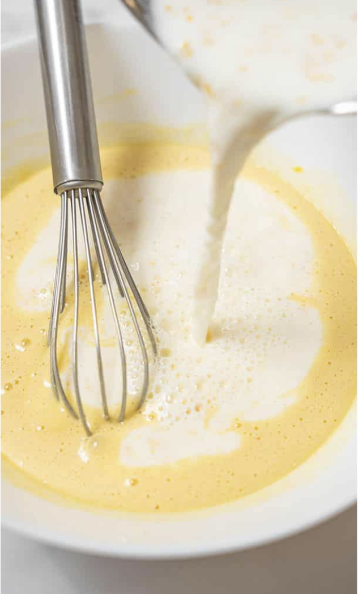

Basque Cake
A delicious dessert from the Basque region of France with a creamy filling encased in a tender pastry.
⏱️
1h 30m
Prep + Cook
üçΩÔ∏è
12 servings
Servings
üî•
Medium
Difficulty
Common Dietary Limitations
- Not dairy-free or vegan, as it relies on heavy cream and full-fat cream cheese.
- Contain eggs
- Not gluten-free, contain flour
- High fat and sugar
Equipment
- Sauce Pan
- Measuring Cup
- Teaspoon
- Mixing Bowl
- 9 inch Springform Pan
Ingredients
Instructions
-
To make the pastry cream filling: In a saucepan, combine the milk and ⅓ cup of sugar. Bring to a boil, stirring to dissolve sugar. Remove from heat. In a small bowl, combine ⅓ cup of sugar and 2 tablespoons flour. Beat in the eggs and vanilla.
-
Mix ½ cup of hot milk into egg mixture, then pour the egg mixture back into the saucepan with the hot milk. Return to heat and bring to a boil. Continue cooking until thick and smooth. Let cool for 1 hour.
-
Preheat oven to 350°F (175°C). Grease and flour a 9-inch springform pan. Combine and sift the flour and baking powder.
-
Cream 1 ⅛ cup sugar and 3 eggs until light and fluffy. Fold in the sifted flour mixture in three increments.
-
Spread half of the dough into the pan, add pastry cream to within ¾ inch of the edge, then top with remaining dough to enclose the filling.
-
Bake at 350°F (175°C) for 30-40 minutes or until golden brown.